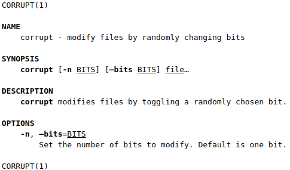
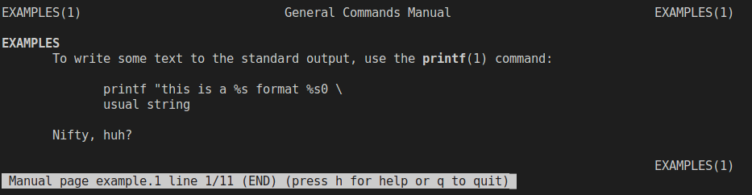

Writing man-pages
Introduction
Manual pages are the canonical type of documentation for Unix systems. They are a bit arcane, but for a technology several decades old, they’ve held up quite well. The arcane bit is the markup language. This is a brief tutorial on writing good manual pages, at least for the typical cases. You’ll be assumed to be familiar with reading manual pages already.
There are actually many ways to produce manual pages. The man(1) command needs a file using troff(1) formatting commands. troff is a typesetting system from the 1970s, written by the Unix developers. The troff file can be written manually, or generated from other formats, such as DocBook or Perl POD markup. On Linux, groff, the GNU implementation of troff, is used.
Conventions in manual pages
The important thing is that the formatted page follows manpage typesetting and other conventions, so that readers can efficiently extract the needed information from them. This bit is important: manpages are reference documentation, intended to quickly answer questions like "what is the purpose of this command?" or "is there an option to show more information about files?".
Here are some of the more important conventions:
-
the page should be short and to the point, without sacrificing clarity
-
use only the usual sections, in the usual order; see
man-pages(7)for details -
in particular, give a brief, readable summary of command line syntax in SYNOPSIS; if there are a lot of options, list them in the OPTIONS section
-
format the OPTIONS section so that options are in bold and their optional arguments are in italic, to improve fast skimming of the page
-
for anything that is complicated to use, add an EXAMPLE section add examples for the common cases, not just special ones: you may think your program is obvious to use, but not everyone will find it so...
-
don’t forget ENVIRONMENT and FILES sections
-
the SEE ALSO section is also often useful to add
Example manual page
You can either do complete this on a NUC, your own linux machine, or gitpod.
troff is a programming language for typesetting. It has a macro facility, and several macro packages have been written for writing manual pages. The most common of these is the -man one. Here’s an example of a manpage, using that, reproduce this opening a file called corrupt.1
.TH CORRUPT 1
.SH NAME
corrupt \- modify files by randomly changing bits
.SH SYNOPSIS
.B corrupt
[\fB\-n\fR \fIBITS\fR]
[\fB\-\-bits\fR \fIBITS\fR]
.IR file ...
.SH DESCRIPTION
.B corrupt
modifies files by toggling a randomly chosen bit.
.SH OPTIONS
.TP
.BR \-n ", " \-\-bits =\fIBITS\fR
Set the number of bits to modify.
Default is one bit.
Save that in a file, and then view it using the command:
$ gzip < corrupt.1 > corrupt.1.gz && man -l corrupt.1.gz
The output should be approximately like this (after a manual conversion to HTML to allow fonts):

The title: .TH
Every manual page should start by specifying its title:
.TH CORRUPT 1
Here, CORRUPT is the name of the manual page, and 1 is the section in which the manual page belongs (section 1 for user commands, 2 for system calls, etc; see man-pages(7)` for the whole list).
You can additionally add three more pieces of information: the date of this revision of the manual page, where the program it documents came from, and the title of the whole book to which this page belongs to.
NAME section
.SH NAME
corrupt \- modify files by randomly changing bits
The NAME section declares the name of command that is being documented. It also gives a very brief explanation of what it does. These two parts are separated by backslash-dash. That’s a magic combination, the man command requires it.
This section is the source for data for man -k searches. That’s a useful feature, and it is good to pay a bit of attention to making the brief explanation as useful as possible. However, do keep it brief; having it be broken on several lines looks bad. (It may be a sign of a badly designed program if the brief explanation is hard to write.)
The Debian and derivatives man implementation comes with lexgrog, which can verify that you get the NAME section right.
SYNOPSIS section
.SH SYNOPSIS
.B corrupt
[\fB\-n\fR \fIBITS\fR]
[\fB\-\-bits\fR \fIBITS\fR]
.IR file ...
In this section, we give the user a summary of how the command line syntax of the program looks like. Font usage is important here, and carries information. All the parts that are in bold are things that the user is expected to write verbatim. Italic indicates values the user is expected to fill in. Normal font is used for syntax meta-characters: for the brackets that indicate optionality, and the ellipsis that indicates repetition.
Using fonts
Fonts can be set in two ways:
-
either using the dot-commands, or the
\-fescapes ->\-f. -
.Bcommand (where the dot is at the beginning of a line) typesets the rest of the line in bold face. -
.Itypesets in italics (but terminals show that as underline), -
.Rin whattroffcalls the roman font, and the rest of us call the normal font. -
You can combine these,
.BRtypesets the first word on the line in bold, the second in normal font. The output will have no space between the words:.BRmanpagename (7) would be the usual way to refer to another manual page. If a word has spaces in it, use double quotes:.B "far and away"for example.
-
\-fescapes work anywhere on a line, and sometimes they’re easier to use than the dot-commands. Their effect also does not end at the end of a line.
An unfortunate bit of arcane syntax is that dashes in options should be prefixed by backslashes. Thus, write \-\-bits, not just --bits. The Debian and Ubuntu implementation of man treats them the same, for terminal output, but this is not portable.
Technically a naked - means a hyphen, whereas \- means a minus sign.
Typographically these are distinct, and they are also distinct in Unicode. The typesetter is free to break a line at a hyphen, but not at a minus. For dashes in options, you should thus use minuses, but in normal text, for normal words, the hyphen.
DESCRIPTION section
.SH DESCRIPTION
.B corrupt
modifies files by toggling a randomly chosen bit.
The DESCRIPTION section describes what the program does, in more detail than the NAME section. There are no artificial size limits here, but it’s still good style to avoid being long-winded. At the same time, it is perhaps best to not be quite as terse as the example.
Paragraphs and line structure
If you write more than one paragraph, start the other paragraphs with the .PP command. Do not just leave an empty line; this makes troff sometimes do the wrong thing. In fact, the manual page source should have no empty lines at all.
troff prefers you to start every sentence on a new line. This lets it typeset end-of-sentence whitespace better, when it produces output using proportional fonts. Also, this makes it easier to compare versions of a manpage with diff.
More about fonts
There are some more font convention:
- use bold for the command you are documenting
- refer to other manual pages like this: man-pages(7) (easiest to achieve like this:
.BR man-pages (7)) - filenames in italics
See man-pages(7) for more details.
OPTIONS section
.SH OPTIONS
.TP
.BR \-n ", " \-\-bits =\fIBITS\fR
Set the number of bits to modify.
Default is one bit.
Options are perhaps the most tedious part to document. It is also the part where proper formatting gives the most benefit to the reader.
First, there is the list structure. This is achieved with the .TP command, which is kind of magic. It takes the next line, and does not indent it, and then indents the rest of the paragraph. This gives the nice indented-paragraph style that makes it easy to quickly scan even a long list of options to find the right one.
That first, un-indented line describes the option, giving its name, and indicates if it gets an argument or not. If there are several names for an option (a long one, and a one-letter one, for example), they should be on the same line, separated by commas. The one-letter option name does not get the option argument, to keep things short.
Fonts are again used to clarify things:
- the name of the option (including any dashes at the beginning) is in bold
- any argument is in italic, but the equals sign (if any) is in normal font
- the comma between options is in normal font.
Comments in troff source
troff also supports comments: start a line with .\" and it is a comment. You can use them, for example, to add white space between descriptions of options in the OPTIONS section (remember, no empty lines).
Marking up examples
Most manual pages benefit from an EXAMPLES section, which shows basic use of the command. Sometimes advanced use is also useful to show, but basic use is almost always useful, because that’s what people need most often.
Marking up examples of command line use is a bit tricky in manual pages. Here’s an example of an example, trt this in a new file called example.1:
.TH EXAMPLES 1
.SH EXAMPLES
To write some text to the standard output, use the
.BR printf (1)
command:
.PP
.nf
.RS
printf "this is a %s format %s\n" \\
usual string
.RE
.fi
.PP
Nifty, huh?
$ gzip < example.1 > example.1.gz && man -l example.1

.nfturns off paragraph filling mode: we don’t want that for showing command lines..fiturns it back on..RSstarts a relative margin indent: examples are more visually distinguishable if they’re indented..REends the indent.\\puts a backslash in the output. Since troff uses backslash for fonts and other in-line commands, it needs to be doubled in the manual page source so that the output has one.
The backslash is used to show that the shell command line is broken into two physical lines, even if it is just one logical command. This is fairly commonly needed in manual pages: the page width is usually only 80 monospace characters wide, and with margins and indentations there’s often only about 60 or 65 characters per line in the example. Command line examples therefore need to be wrapped, and it’s better to be done explicitly in the manual page source than letting the man program do it.
Other ways of creating manual pages
This example used the -man macros for troff, since that is the most common way to write manual pages. However, they are admittedly arcane at this point in history. They’re pretty easy to write, but not nearly as convenient as, say, Perl POD markup, or DocBook markup (see the refentry element). However, those other markup languages require conversion tools to produce a file that man can actually use, and the tools do not always properly follow the manpage formatting conventions.